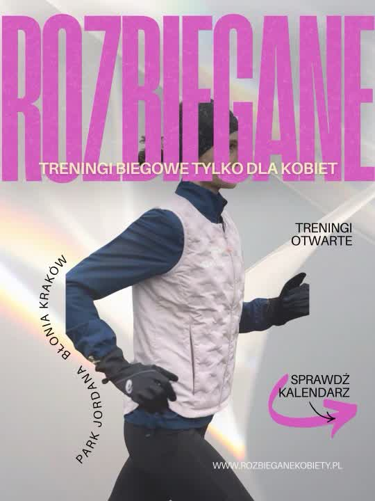

{{POST_TITLE}}
Zapraszamy wszystkie kobiety na wyjątkowy cykl treningów biegowych. Raz w miesiącu spotykamy się w Krakowie, by razem odkrywać radość biegania! To idealna okazja, by aktywnie spędzić poranek, zrobić mocny trening, a przy tym poznać tajniki biegania. Każde spotkanie to nie tylko sport, ale też dawka wiedzy. Spodziewajcie się też drobnych niespodzianek.
- Terminy: 21.03.2026 (sobota), 12.04.2026 (niedziela), 16.05.2026 (sobota)
- Godzina: 9:00
- Miejsce: Kraków, Błonia (Park Jordana)
- Dla kogo: wszystkie kobiety – zarówno początkujące, jak i zaawansowane
- Pierwszy trening: podział na dwie grupy – osobna ścieżka dla zupełnie początkujących, z dedykowaną trenerką
Trening nie wymaga zapisów ani opłat. Udział odbywa się na odpowiedzialność uczestniczki; nie zapewniamy szatni ani toalety. Przed treningiem przeczytaj regulamin treningów otwartych.

Dołącz do nas, poczuj moc wspólnego biegania i zacznij swoją wiosenną przygodę! Masz pytania? Zapoznaj się z ofertą lub napisz do nas.